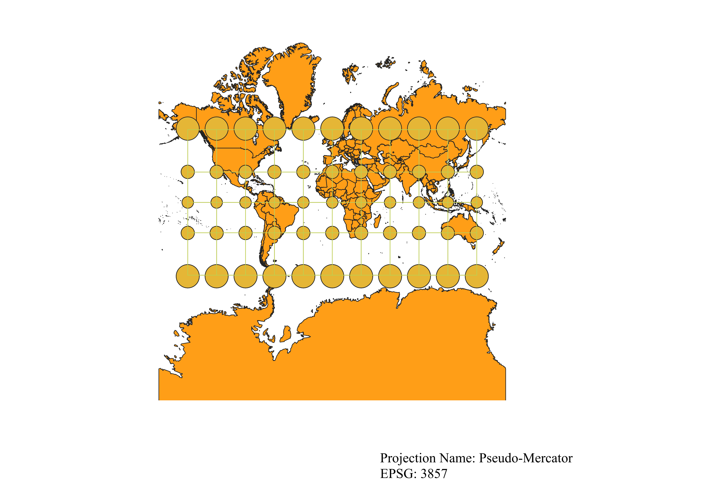
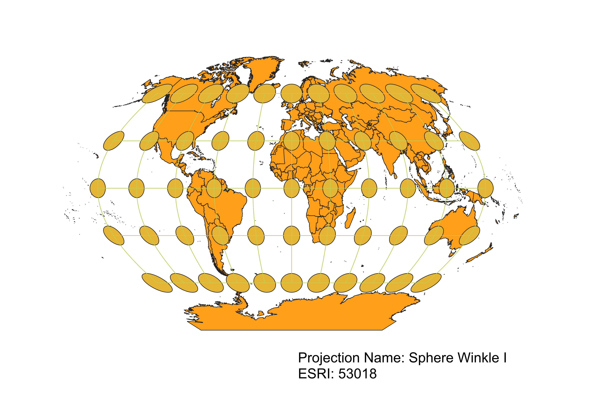
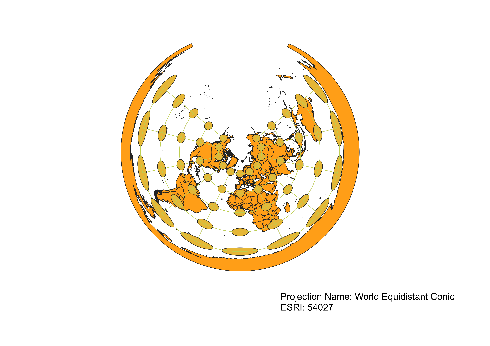
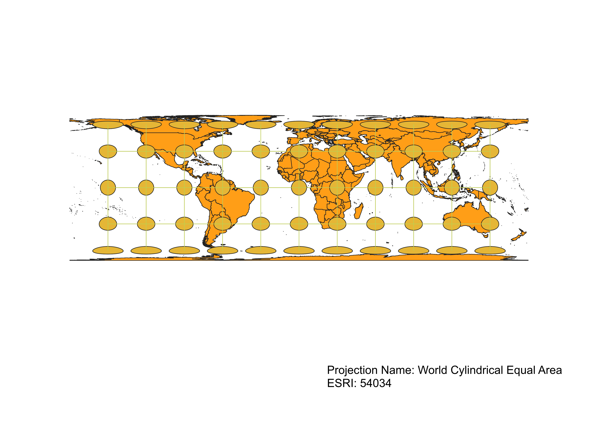
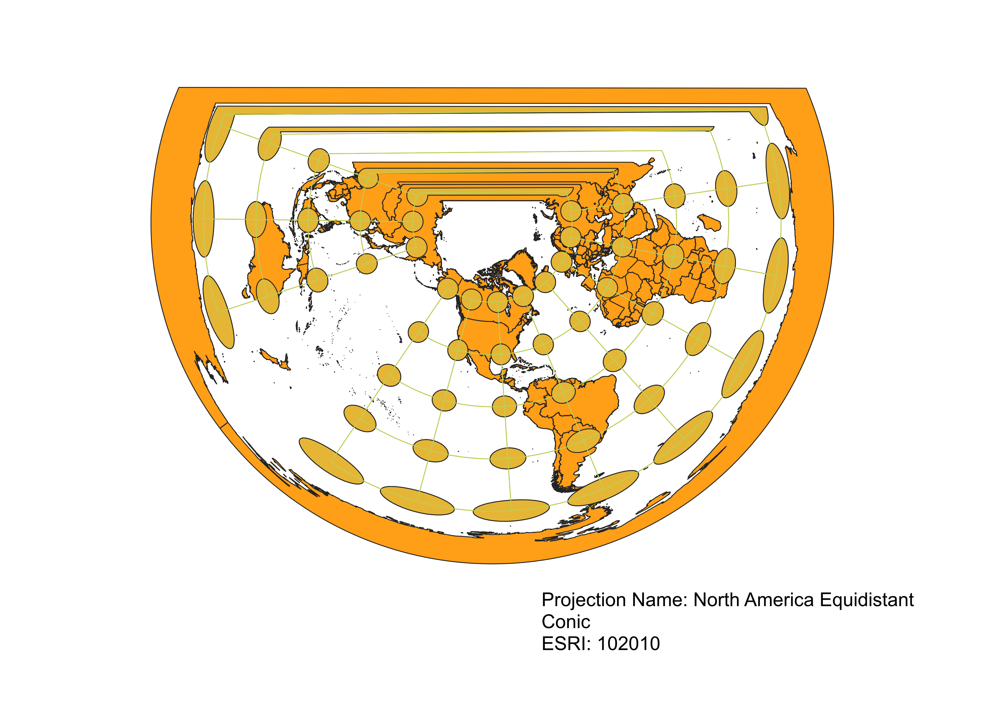
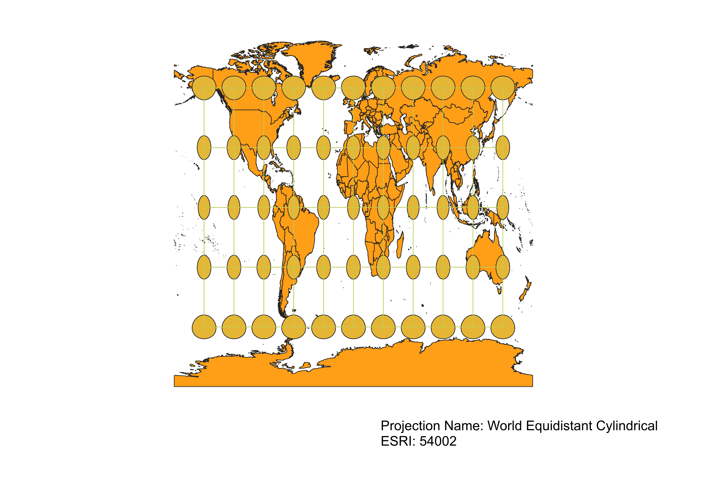
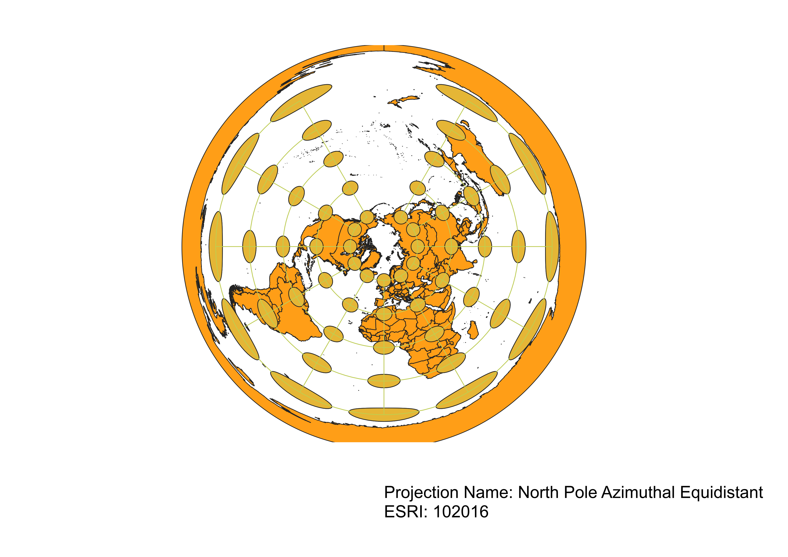

In this project I learned how to display images in different projections
For this assignment, I was able to display the different map projections using QGIS by first installing the indicatrix mapper plugin. I then loaded the shp file containing the map of world countries into QGIS, then used the plugin to display a certain projection. Next, I exported the map as a PNG using composer, before finally using VS code to correctly code for the map to be displayed on my github website. I repeated these steps with each projection.
WGS84 Projection
This projection, although doing a good job of preserving distance and direction, has clear distortions in shape and area that get larger closer to the poles. The areas get bigger while the shape changes from a circle to an ellipse.

Aitoff Projection
This projection is an equal-area projection that tries to preserve the relative sizes of areas on the Earth's surface, doing a good near the equator and African contnet. However, as you move away from the equator, distortions in both area and shape increase as areas near the poles appear larger and more stretched than they actually are. There also distortions in distances, which become more stretched away from the equator and prime meridian, as well as direction, due to angles not being preseved near the poles.

Pseudo-Mercator
This projection does a good job of preserving shape and direction throughout the map, however has major distortions in area that cause areas towards the poles to appear much larger than they actually are. There also distortions in distances, which become vertically stretched as you move away from the equator.

Sphere Winkle I
This projection preserves shape throughout the map, however has clear distortions in area, which get larger as you move towards the poles. There are also distortions in distance, which shrink horizionatally and grow vetically as you move away from the equator.

World Equidistant Conic
This projeciton preserves shape and area in the North Pole region, however moving south both of these incur severe distortions as areas become stretched and grow significantly larger. Distortions also take the form of distance and direction, with distances between points growing larger both horizionatally and vertically as you move south, while angles change throughout the entire map.

World Cylindrical Equal Area
This projection preserves both distance and direction throughout the entire map, however has clear distortions in both shape and area as you move further away from the equator with regions becoming both stretched and larger.

North American Equidistant Conic
This projeciton preserves shape and area in the North Pole region, however moving south both of these incur severe distortions as areas become stretched and grow significantly larger. Distortions also take the form of distance and direction, with distances between points growing larger both horizionatally and vertically as you move south, while angles change throughout the entire map.

World Equidistant Cylindrical
This projection preserves distance and direction throughout the entire map, however has clear distortions in both shape and area. Areas closer to the equator appear to be stretched, while areas further from the equator appear to be larger in size than in reality.

North Pole Azithumal Equidistant
This projeciton preserves shape and area in the North Pole region, however moving south both of these incur severe distortions as areas become stretched and grow significantly larger. Distortions also take the form of distance and direction, with distances between points growing larger both horizionatally and vertically as you move south, while angles change throughout the entire map.

Data used for this project
Download Natrual Earth 1:10m Cultural Vector